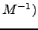

Next: Subroutine mld_precbld
Up: User Interface
Previous: Subroutine mld_precinit
Contents
Subroutine mld_precset
call mld_precset(p,what,val,info)
This routine sets the parameters defining the preconditioner. More
precisely, the parameter identified by what is assigned the value
contained in val.
The routine may also be invoked as a method
of the preconditioner object as in the following:
call p%set(what,val,info [,ilev, pos])
In this case it is also possible to specify an optional ilev
argument that restricts the effect of
the call to the specified level.
Finally, if the user has developed a new type of smoother and/or
solver by extending one of the base MLD2P4 types, and has declared a
variable of the new type in the main program, it is possible to pass
the new smoother/solver variable to the setup routine as follows:
call p%set(smoother,info [,ilev ,pos])
call p%set(solver,info [,ilev ,pos])
In this way, the variable will act as a mold to which the
preconditioner will conform, even though the MLD2P4 library is not
modified, and thus has no direct knowledge about the new type.
Arguments
p |
type(mld_xprec_type), intent(inout). |
| |
The preconditioner data structure. Note that x must
be chosen according to the real/complex, single/double precision
version of MLD2P4 under use. |
what |
integer, intent(in) or character(len=*). |
| |
The parameter to be set. It can be specified by
a predefined constant, or through its name; the string
is case-insensitive. See also
Tables 2-6. |
val |
integer or character(len=*) or
real(psb_spk_) or real(psb_dpk_),
intent(in). |
| |
The value of the parameter to be set. The list of allowed
values and the corresponding data types is given in
Tables 2-6.
When the value is of type character(len=*),
it is also treated as case insensitive. |
smoother |
class(mld_x_base_smoother_type) |
| |
The user-defined new smoother to be employed in the
preconditioner. |
solver |
class(mld_x_base_solver_type) |
| |
The user-defined new solver to be employed in the
preconditioner. |
info |
integer, intent(out). |
| |
Error code. If no error, 0 is returned. See Section 7
for details. |
pos |
charater(len=*), intent(in). |
| |
Whether the other arguments apply to the 'PRE'
or to the 'POST' smoothers. |
A variety of (one-level and multi-level) preconditioners can be obtained
by a suitable setting of the preconditioner parameters. These parameters
can be logically divided into four groups, i.e. parameters defining
- the type of multi-level preconditioner;
- the one-level preconditioner used as smoother;
- the aggregation algorithm;
- the coarse-space correction at the coarsest level.
A list of the parameters that can be set, along with their allowed and
default values, is given in Tables 2-6.
For a detailed description of the meaning of the parameters, please
refer to Section 4.
The smoother and solver objects are arranged in a hierarchical manner;
when specifying a smoother object, its parameters including the
contained solver are set to default values, and when a solver
object is specified its defaults are also set, overriding in both
cases any previous settings even if explicitly specified. Therefore if
the user sets a new smoother, and wishes to use a solver
different from the default one, the call to set the solver must come
after the call to set the smoother.
The combination of a Jacobi smoother with a Diagonal Scaling local
solver is equivalent to the strategy called Point Jacobi in the
literature; similarly, having a Jacobi smoother with a Gauss-Seidel
local solver is equivalent to a ``hybrid Gauss-Seidel'' solver.
Completely new smoother and/or solver class derived from the
base objects in the library may be used without recompiling the
library itself. Once the new smoother/solver class has been
developed, the user can declare a variable of that new type in the
application, and pass that variable to the p%set(solver,info)
call; the new solver object is then dynamically included in the
preconditioner structure.
The what,val pairs described here are those of the predefined
smoother/solver objects; newly developed solvers may define new pairs
according to their needs.
Table 2:
Parameters defining the type of multi-level preconditioner.
what |
DATA TYPE |
val |
DEFAULT |
COMMENTS |
mld_ml_type_
ML_TYPE |
character(len=*) |
'ADD' 'MULT' |
'MULT' |
Basic multi-level framework: additive or multiplicative
among the levels (always additive inside a level). |
mld_smoother_type_
SMOOTHER_TYPE |
character(len=*) |
'JACOBI' 'BJAC' 'AS' |
'AS' |
Basic predefined one-level preconditioner
(i.e. smoother): Jacobi, block Jacobi, AS. |
mld_smoother_pos_
SMOOTHER_POS |
character(len=*) |
'PRE' 'POST' 'TWOSIDE' |
'TWOSIDE' |
``Position'' of the smoother: pre-smoother, post-smoother,
pre- and post-smoother. |
|
Table 3:
Parameters defining the one-level preconditioner used as smoother.
what |
DATA TYPE |
val |
DEFAULT |
COMMENTS |
mld_sub_ovr_
SUB_OVR |
integer
|
any int. num. 
|
1
|
Number of overlap layers. |
mld_sub_restr_
SUB_RESTR |
character(len=*)
|
'HALO' 'NONE'
|
'HALO'
|
Type of restriction operator:
'HALO' for taking into account the overlap, 'NONE'
for neglecting it. |
mld_sub_prol_
SUB_PROL |
character(len=*)
|
'SUM' 'NONE'
|
'NONE'
|
Type of prolongation operator:
'SUM' for adding the contributions from the overlap, 'NONE'
for neglecting them. |
mld_sub_solve_
SUB_SOLVE |
character(len=*)
|
'DIAG'
'GS' 'BWGS'
'ILU'
'MILU' 'ILUT'
'UMF'
'SLU'
'MUMPS'
|
'ILU'
|
Predefined local solver: pointwise Jacobi
(diagonal scaling),
(forward) Gauss-Seidel, Backward
Gauss-Seidel, ILU( ), MILU(),
ILU( ), MILU(),
ILU( ), LU from UMFPACK, LU from
SuperLU (plus triangular solve), LU from MUMPS. ), LU from UMFPACK, LU from
SuperLU (plus triangular solve), LU from MUMPS. |
mld_sub_fillin_
SUB_FILLIN |
integer
|
Any int. num.
|
0
|
Fill-in level of the incomplete LU factorizations. |
mld_sub_iluthrs_
SUB_ILUTHRS |
real(kind_parameter)
|
Any real num.
|
0
|
Drop tolerance  in the ILU() factorization. in the ILU() factorization. |
mld_sub_ren_
SUB_REN |
character(len=*)
|
'RENUM_NONE' 'RENUM_GLOBAL'
|
'RENUM_NONE'
|
Row and column reordering of the local submatrices: no reordering,
reordering according to the global numbering of the rows and columns of
the whole matrix. |
mld_solver_sweeps_
SOLVER_SWEEPS |
integer
|
Any int. num. 
|
1
|
Number of sweeps for iterative local solver
(currently only Gauss-Seidel). |
|
Table 4:
Parameters defining the aggregation algorithm.
what |
DATA TYPE |
val |
DEFAULT |
COMMENTS |
mld_coarse_aggr_size_
COARSE_AGGR_SIZE |
integer |
A positive number |
The cubic root of
the matrix size at the fine level. |
Coarse size threshold. Aggregation will
proceed until either the global number of
variables is below this threshold, or the
aggregation does not reduce the size any
longer, or the maximum number of levels is
reached. |
mld_min_aggr_ratio
MIN_AGGR_RATIO |
real |
A number greater than one |
1.5 |
Minimum aggregation ratio. Aggregation will
stop if the ratio between the matrix sizes
at two consecutive levels drops below this
threshold. |
mld_n_prec_levs_
N_PREC_LEVS |
integer |
A number greater than 1, or -1. |
-1 |
Number of levels; if set to a positive
number greater than 1, it will force the
aggregation algorithm to use this many
levels (unless there is no reduction in the
coarse matrix size). |
mld_max_prec_levs_
MAX_PREC_LEVS |
integer |
A positive number |
20 |
Maximum number of levels: irrespective of
the other settings, do not use more than
this many levels. |
mld_aggr_alg_
AGGR_ALG |
character(len=*) |
'DEC', 'SYMDEC' |
'DEC' |
Aggregation algorithm. Currently, only the
decoupled aggregation is available; the
SYMDEC option applies decoupled
aggregation to the sparsity pattern
of  . . |
mld_aggr_ord_
AGGR_ORD |
character(len=*) |
'NATURAL' |
'DEGREE' |
Initial ordering of indices for aggregation
algorithm: natural ordering or sorted by
descending degree of the node in the
matrix graph. Since aggregation is
heuristics, results will be different. |
|
Table 5:
Parameters defining the aggregation algorithm.
what |
DATA TYPE |
val |
DEFAULT |
COMMENTS |
mld_aggr_kind_
AGGR_KIND |
character(len=*) |
'SMOOTHED' 'NONSMOOTHED' |
'SMOOTHED' |
Type of aggregation: smoothed, nonsmoothed
(i.e. using the tentative prolongator). |
mld_aggr_thresh_
AGGR_THRESH |
real(kind_parameter) |
Any real num. ![$\in [0, 1]$](img94.png) |
0.05 |
Threshold  in the aggregation algorithm. in the aggregation algorithm. |
mld_aggr_scale_
AGGR_SCALE |
real(kind_parameter) |
Any real num. |
1.0 |
Scale factor applied to the threshold going
from level  to level to level  . . |
mld_aggr_omega_alg_
AGGR_OMEGA_ALG |
character(len=*) |
'EIG_EST' 'USER_CHOICE' |
'EIG_EST' |
How the damping parameter  in the
smoothed aggregation should be computed:
either via an estimate of the spectral radius of in the
smoothed aggregation should be computed:
either via an estimate of the spectral radius of
 , or explicily
specified by the user. , or explicily
specified by the user. |
mld_aggr_eig_
AGGR_EIG |
character(len=*) |
'A_NORMI' |
'A_NORMI' |
How to estimate the spectral radius of .
Currently only the infinity norm estimate
is available. |
mld_aggr_omega_val_
AGGR_OMEGA_VAL |
real(kind_parameter) |
Any nonnegative real num. |
 |
Damping parameter in the smoothed aggregation algorithm.
It must be set by the user if
USER_CHOICE was specified for
mld_aggr_omega_alg_,
otherwise it is computed by the library, using the
selected estimate of the spectral radius  of
. of
. |
|
Table 6:
Parameters defining the coarse-space correction at the coarsest
level.
what |
DATA TYPE |
val |
DEFAULT |
COMMENTS |
mld_coarse_mat_
COARSE_MAT |
character(len=*) |
'DISTR' 'REPL' |
'DISTR' |
Coarsest matrix: distributed among the processors or
replicated on each of them. |
mld_coarse_solve_
COARSE_SOLVE |
character(len=*) |
'BJAC'
'UMF' 'MUMPS'
'SLU' 'SLUDIST' |
'BJAC' |
Solver used at the coarsest level: block Jacobi, sequential
LU from UMFPACK, sequential LU from SuperLU,
distributed LU from SuperLU_Dist or MUMPS.
'SLUDIST' and 'MUMPS'
require the coarsest matrix to be distributed, while
'UMF' and 'SLU' require
it to be replicated. |
mld_coarse_subsolve_
COARSE_SUBSOLVE |
character(len=*) |
'ILU' 'MILU'
'ILUT'
'UMF'
'SLU'
'MUMPS' |
See note |
Solver for the diagonal blocks of the coarse matrix,
in case the block Jacobi solver
is chosen as coarsest-level solver: ILU(), MILU(),
ILU(), LU from UMFPACK,
LU from SuperLU, plus triangular solve. |
mld_coarse_sweeps_
COARSE_SWEEPS |
integer |
Any int. num.  |
4 |
Number of Block-Jacobi sweeps when 'BJAC' is used as
coarsest-level solver. |
mld_coarse_fillin_
COARSE_FILLIN |
integer |
Any int. num. |
0 |
Fill-in level of the incomplete LU factorizations. |
mld_coarse_iluthrs_
COARSE_ILUTHRS |
real(kind_parameter) |
Any real. num. |
0 |
Drop tolerance in the ILU() factorization. |
| Note: defaults for
mld_coarse_subsolve_ are chosen as |
| single precision version: 'MUMPS' if installed, 'SLU' if installed, 'ILU' otherwise |
| double precision version: 'MUMPS' if installed, 'UMF' if installed,
else 'SLU' if installed, 'ILU' otherwise |
|
Next: Subroutine mld_precbld
Up: User Interface
Previous: Subroutine mld_precinit
Contents